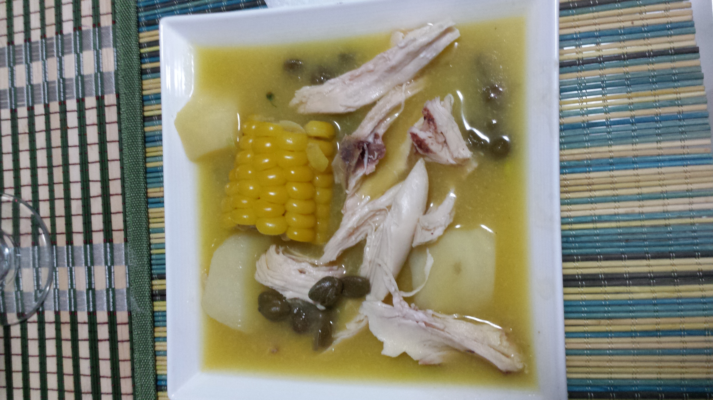

Ajiaco

By Xemenendura - Own work, CC BY-SA 3.0, Wikipedia.com
Ajiaco is a traditional colombian recipe, which contains several types of potatoes, corn, chicken and others ingredients that give it it's characteristic flavor.
Ingredients
- 5 potatoes
- 1 corn
- 1/2 pound of guascas
- 1 big breast
- salt and pepper
Preparation
- Put 1 liter of water over low heat and add salt.
- Add the chicken breast and leave it here for 45 minutes.
Home